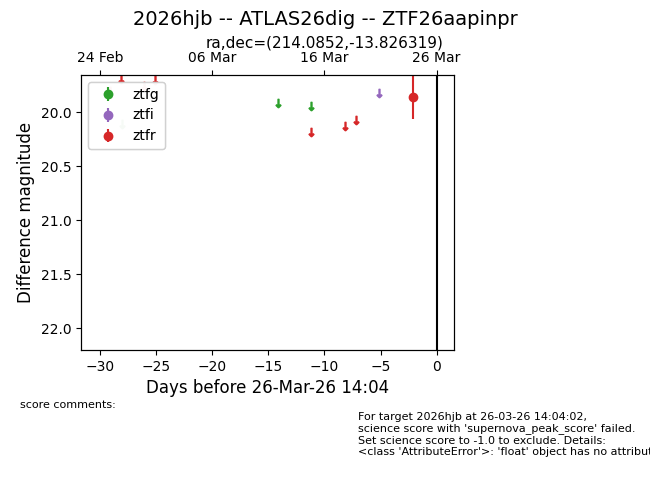
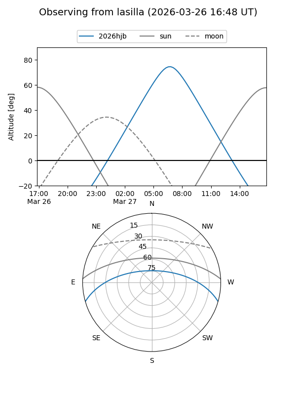
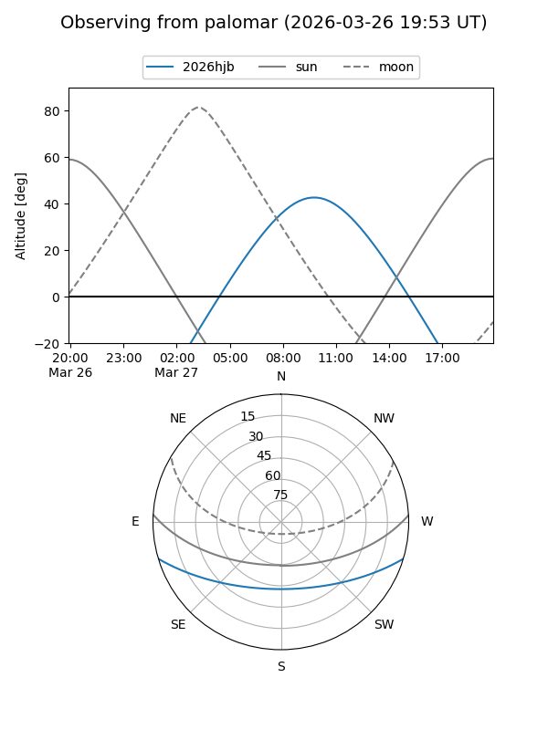

2026hjb
Target 2026hjb at 2026-03-26 14:06
Aliases and brokers:
FINK: link
Lasair: link
ALeRCE: link
TNS: link
YSE: link
alt names
ZTF26aapinpr (ztf,fink_ztf)
2026hjb (tns,yse)
ATLAS26dig (atlas)
Coordinates:
equatorial (ra, dec) = 214.0852,-13.82632
equatorial (HMS+DMS) = 14:16:20.46,-13:49:34.75
galactic (l, b) = (332.2725,+44.15511)
Flags:
Photometry:
last ztfr=19.86
1 ztfr detections
Lightcurve

Visibility


Additional plots